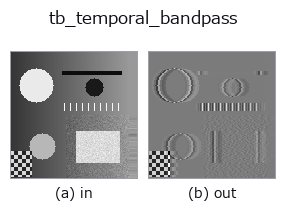
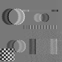

typed op• Datenarten: video → video
• Aufruf: fullseye.apply(img, "tb_temporal_bandpass", a=0.5, b=0.5) (das 2-D-Modell ist ein Bild plus zwei skalare Regler a,b∈[0,1])

*Die Abbildung ist die tatsächliche Ausgabe auf einer synthetischen 128×128-Eingabe. Links Eingabe, rechts Ausgabe. Punktwolken als Draufsicht-Streudiagramm (Helligkeit = z), 1-D-Reihen als Linie, Volumen als Maximum-Projektion entlang z, Videos als mittleres Bild, komplexe Bilder als Betrag; Rückgabewerte, die kein Bild ergeben, werden als Werte gezeigt.*
Regler a durchfahren (0,1 / 0,5 / 0,9, der andere Regler auf Standard):
▸ tb_temporal_bandpass: Regler a durchfahren (Doku-Website)
Regler b durchfahren (0,1 / 0,5 / 0,9, der andere Regler auf Standard):
▸ tb_temporal_bandpass: Regler b durchfahren (Doku-Website)
Stufen (die vorangehenden Ops → dieser Op, von links nach rechts):
▸ tb_temporal_bandpass: Stufen (Doku-Website)
Auf anderen Bildern (synthetische Szene / Foto / Münzen. Obere Reihe: Eingaben, untere Reihe: deren Ausgaben. Regler auf Standard):
▸ tb_temporal_bandpass: andere Eingaben (Doku-Website)
Bewegung (GIF: Bilder / Ansichten / Schnitte nacheinander. Die stehende Abbildung ist die vollständige; das GIF ist ergänzend):

Idealer zeitlicher Bandpass der Zeitreihe jedes Pixels -> (T, H, W).
> Die ausführliche Beschreibung unten ist der Originaltext — Zusammenfassung und Überschriften sind übersetzt.
Each pixel is transformed along time, every DFT bin whose frequency lies outside [f_lo, f_hi] (in Hz, magnitude, DC always excluded) is zeroed, and the result is transformed back. Frequency-selective where videops.moving_average and videops.spatiotemporal_gaussian are low-pass; this is the filter isolating "what is happening at 4 Hz".
Exact for a component sitting on a bin: with T frames at fps, a sinusoid at k*fps/T Hz passes with gain 1 and everything else in the band passes untouched. Measured on a bin-centred 4 Hz unit sinusoid in a 64-frame 32 fps clip that also carries a DC offset of 0.5 and a 12 Hz component of amplitude 0.3, the recovered waveform matches the 4 Hz term alone to max|err| = 4.36e-15.
A brick-wall filter rings in time; that is the price of an exact pass-band and it is the same choice the 2012 Eulerian magnification paper makes. The output is zero-mean along time by construction.
Typed bridge of the motionmag op temporal_bandpass into the 2-D evolution registry: the same implementation, called under the op(v, a, b) convention. a picks the centre of the pass-band among the clip's own non-DC DFT bins (0 = the lowest bin, 1 = the Nyquist bin) and b its half-width (0 = one bin, 1 = half the bins on each side). The band edges sit half a bin outside the chosen bins (frame rate fixed at 32 fps), so the band holds at least one bin for any clip of two or more frames. (Until 2026-10-07 the band was a fixed 3-5 Hz, which holds no bin for a 12-frame clip, so every call was refused.)
• Katalog der Beispieldaten (Download-URLs / Lizenzen) — 2-D nutzt skimage.data (BSD/Public Domain) plus synthetische Bilder, 3-D nennt Download-URLs echter Datenquellen (Stanford, PDS, …).
• Herkunft und Literatur der Operatoren — die Quellen der Forschung/Verfahren, auf denen diese Operatorfamilie beruht.
Das Programm unten ist nachweislich lauffähig (gleiche Eingabe wie die Abbildung). In der Studio-Hilfe wird dieser Block zu Schaltflächen, die es sofort laden und ausführen.
img_to_video 0.50 0.50 tb_temporal_bandpass 0.50 0.50
▸ Diese Pipeline laden · Laden & ausführen
Die folgenden Beispiele rufen den zugrunde liegenden Ledger-Op temporal_bandpass auf. Dieser Brücken-Op ist dieselbe Implementierung, angepasst an die Konvention fn(v, a, b); das Verhalten gilt unverändert (nur die Aufrufform unterscheidet sich).
• motion_magnification — py -3.11 examples/motion_magnification.py
• poc_beam_modal_video — py -3.11 examples/poc_beam_modal_video.py
• poc_motion_magnification — py -3.11 examples/poc_motion_magnification.py
video als Eingabe)identity · tb_temporal_band_power · tb_temporal_median_window · tb_moving_average_window · tb_background_subtraction_window · tb_frame_difference_causal · tb_exponential_background · tb_exponential_foreground
typed)tb_points_to_voxel · tb_estimate_point_normals · tb_iss_keypoints · tb_project_points · tb_render_point_depth · tb_statistical_outlier_removal · tb_radius_outlier_removal · tb_voxel_grid_downsample
*Provenance: ops.py — 2D Operator-Registry. Diese Notiz wird von tools/opdocs.py md erzeugt (nicht von Hand bearbeiten).*
© 2026 Kazufumi Furuse — Fullseye operator documentation. Licensed under Apache-2.0.